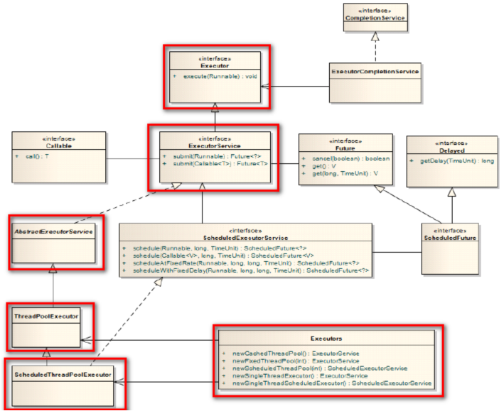

什么是线程池
创建和销毁对象是非常耗费时间的
创建对象：需要分配内存等资源
销毁对象：虽然不需要程序员操心，但是垃圾回收器会在后台一直跟踪并销毁
对于经常创建和销毁、使用量特别大的资源，比如并发情况下的线程，对性能影响很大。
思路：创建好多个线程，放入线程池中，使用时直接获取引用，不使用时放回池中。可以避免频繁创建销毁、实现重复利用
生活案例：在尚学堂借用和归还电脑
技术案例：线程池、数据库连接池
JDK1.5起，提供了内置线程池
线程池的好处
提高响应速度（减少了创建新线程的时间）
降低资源消耗（重复利用线程池中线程，不需要每次都创建）
提高线程的可管理性：避免线程无限制创建、从而销毁系统资源，降低系统稳定性，甚至内存溢出或者CPU耗尽
线程池的应用场合
需要大量线程，并且完成任务的时间端
对性能要求苛刻
接受突发性的大量请求
线程池的使用
import java.util.concurrent.ExecutorService;
import java.util.concurrent.Executors;
/**
* 使用线程池执行Runable命令
*
*
* @author Administrator
*
*/
public class TestPool {
public static void main(String[] args) {
//创建一个具有可伸缩数量的线程的线程池
//ExecutorService pool = Executors.newCachedThreadPool();
//创建一个具有固定线程数量的线程池
//ExecutorService pool = Executors.newFixedThreadPool(5);
//创建一个只有一个线程的线程池
ExecutorService pool = Executors.newSingleThreadExecutor();
for(int i =0;i<20;i++){
final int n = i;
Runnable r = new Runnable() {
@Override
public void run() {
System.out.println("线程开始"+n);
try {
Thread.sleep(1000);
} catch (InterruptedException e) {
e.printStackTrace();
}
System.out.println("线程结束"+n);
}
};
//pool.submit(r);
pool.execute(r);
}
pool.shutdown();
}
}
import java.util.ArrayList;
import java.util.List;
import java.util.Random;
import java.util.concurrent.Callable;
import java.util.concurrent.ExecutionException;
import java.util.concurrent.ExecutorService;
import java.util.concurrent.Executors;
import java.util.concurrent.Future;
/**
* 使用线程池执行Callable任务
* @author Administrator
*
*/
public class TestPool2 {
public static void main(String[] args) {
//开启线程池
ExecutorService service = Executors.newCachedThreadPool();
//执行10个任务并保存结果到集合
List<Future<String>> list = new ArrayList<Future<String>>();
for(int i=0;i<10;i++){
MyCallable callable = new MyCallable();
Future<String> task = service.submit(callable);
list.add(task);
}
//输出10个任务的结果
for(int i=0;i<10;i++){
try {
System.out.println(list.get(i).get());
} catch (InterruptedException e) {
e.printStackTrace();
} catch (ExecutionException e) {
e.printStackTrace();
}
}
//关闭线程池
service.shutdown();
}
}
class MyCallable implements Callable<String>{
@Override
public String call() throws Exception {
return "str"+new Random().nextInt(100);
}
}
线程池的类结构
Executor：线程池顶级接口，只有一个方法
ExecutorService：真正的线程池接口
void execute(Runnable command) ：执行任务/命令，没有返回值，一般用来执行Runnable
<T> Future<T> submit(Callable<T> task)：执行任务，有返回值，一般又来执行Callable
void shutdown() ：关闭连接池
AbstractExecutorService：基本实现了ExecutorService的所有方法
ThreadPoolExecutor：默认的线程池实现类
ScheduledThreadPoolExecutor：实现周期性任务调度的线程池
Executors：工具类、线程池的工厂类，用于创建并返回不同类型的线程池
Executors.newCachedThreadPool()：创建一个可根据需要创建新线程的线程池
Executors.newFixedThreadPool(n); 创建一个可重用固定线程数的线程池
Executors.newSingleThreadExecutor() ：创建一个只有一个线程的线程池
Executors.newScheduledThreadPool(n)：创建一个线程池，它可安排在给定延迟后运行命令或者定期地执行。

理解线程池的构造方法
public ThreadPoolExecutor(
int corePoolSize,
int maximumPoolSize,
long keepAliveTime,
TimeUnit unit,
BlockingQueue<Runnable> workQueue,
ThreadFactory threadFactory,
RejectedExecutionHandler handler) {
}
corePoolSize：核心池的大小
默认情况下，创建了线程池后，线程数为0，当有任务来之后，就会创建一个线程去执行任务。
但是当线程池中线程数量达到corePoolSize，就会把到达的任务放到队列中等待。
maximumPoolSize：最大线程数。
corePoolSize和maximumPoolSize之间的线程数会自动释放，小于等于corePoolSize的不会释放。
当大于了这个值就会将任务由一个丢弃处理机制来处理。
keepAliveTime：线程没有任务时最多保持多长时间后会终止
默认只限于corePoolSize和maximumPoolSize之间的线程
TimeUnit：
keepAliveTime的时间单位
BlockingQueue：
存储等待执行的任务的阻塞队列，有多中选择，可以是顺序队列、链式队列等。
ThreadFactory
线程工厂，默认是DefaultThreadFactory，Executors的静态内部类
RejectedExecutionHandler：
拒绝处理任务时的策略。如果线程池的线程已经饱和，并且任务队列也已满，对新的任务应该采取什么策略。
比如抛出异常、直接舍弃、丢弃队列中最旧任务等，默认是直接抛出异常。
1、CallerRunsPolicy：如果发现线程池还在运行，就直接运行这个线程
2、DiscardOldestPolicy：在线程池的等待队列中，将头取出一个抛弃，然后将当前线程放进去。
3、DiscardPolicy：什么也不做
4、AbortPolicy：java默认，抛出一个异常：
其他：
1.线程池要保证单例（创建线程池的语句别写到循环中）
2.监控多线程执行的工具： jvisualvm.exe jconsole.exe jmc.exe